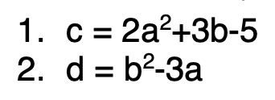
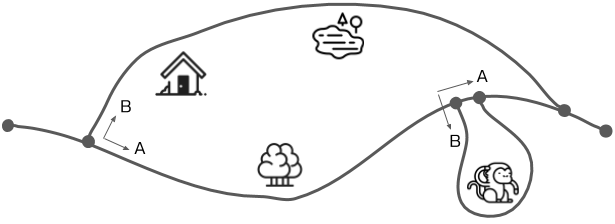

กระบวนการคิดเพื่อการเขียนโปรแกรมแบบโครงสร้างการตัดสินใจ
เพื่อฝึกฝนกระบวนการคิดในการพัฒนาโปรแกรมแบบโครงสร้างการตัดสินใจด้วยภาษาจาวา
โบนัสถ้าคุณสามารถตอบภารกิจที่ 1 ได้โดยไม่ต้องใช้คอมพิวเตอร์
ให้หาผลลัพธ์ของโปรแกรมต่อไปนี้
import java.util.Scanner;
class Task1 {
public static void main(String[] args) {
Scanner sc = new Scanner(System.in);
System.out.print("Enter a number: ");
int x = sc.nextInt();
if (x > 10) {
System.out.println("Green");
}
System.out.println("Red");
if (x < 5) {
System.out.println("Yellow");
System.out.println("Blue");
}
}
}ทำโปรแกรมให้สมบูรณ์ ถ้าหากผู้ใช้ป้อนหมายเลขคู่ ให้แปลงเป็นหมายเลขคี่จำนวนถัดไป
import java.util.Scanner;
class Task2 {
public static void main(String[] args) {
Scanner sc = new Scanner(System.in);
System.out.print("Enter an odd number: ");
int num = sc.nextInt();
if ( ??? ) {
num = num + 1;
}
System.out.println("Your odd number is " + num);
}
}ตัวอย่าง
> java Task2 Enter an odd number: 7 Your odd number is 7 > java Task2 Enter an odd number: 12 Your odd number is 13 > java Task2 Enter an odd number: 21 Your odd number is 21
คำแนะนำ: ใช้ % เพื่อคำนวณส่วนที่เหลือของการหารด้วย 2
เขียนโปรแกรมที่ขอให้ผู้ใช้ป้อน int ระหว่าง 1 ถึง 5 หากผู้ใช้ป้อนหมายเลขที่มีจำนวนสูงกว่า 5 ให้เปลี่ยนค่าเป็น 5 หากจำนวนน้อยกว่า 1 ให้เปลี่ยนค่าเป็น 1
ตัวอย่าง
> java Task3 Enter a number: 4 4 > java Task3 Enter a number: 7 5
เขียนโปรแกรมรับค่าผ่านคีย์บอร์ดจำนวน 2 ค่า เพื่อคำนวณหาค่าผลรวม ถ้าผลรวมมีค่าเป็นเลขคู่ ให้แสดงออกทางหน้าจอว่า "Even number" แต่ถ้าผลรวมเป็นเลขคี่ให้แสดงออกทางหน้าจอว่า "Odd number"
ตัวอย่าง
> java Task4 Enter a number: 4 Even number > java Task4 Enter a number: 7 Odd number
เขียนโปรแกรมเพื่อหาค่าของ c จากสมการที่ 1 เมื่อค่าของตัวแปร a มากกว่าค่าของตัวแปร b และหาค่า d เมื่อค่าของตัวแปร a น้อยกว่าค่าของตัวแปร b จากสมการที่ 2 โดยกำหนดให้ค่าตัวแปร a และ b ต้องรับผ่านคีย์บอร์ด

สามารถเปรียบเทียบตัวเลขได้โดยใช้ ==, !=, <=, >=, <, > แต่การเปรียบเทียบ String ใช้หลายวิธี
"Hello".equals("Hello") // true
"HELLO".equals("Hello") // false"HELLO".equalsIgnoreCase("hello") // true
"Goodbye".equalsIgnoreCase("Hello") // false"Goodbye".startsWith("Good") // true
"Hello".endsWith("lo") // true"Goodbye".length() == "Good".length() // false (7 == 4)
"Good".length() == "Alex".length() // true (4 == 4)"Alex".charAt(3) == 'x' // true
"Alex".charAt(0) == 'a' // false ('A' == 'a')เขียนโปรแกรมที่พิมพ์ "Fine, thank you" เมื่อผู้ใช้ป้อน "How are you?"
import java.util.Scanner;
class Task6 {
public static void main(String[] args) {
Scanner sc = new Scanner(System.in);
System.out.print("Say something: ");
String line = sc.nextLine();
if ( ??? ) {
System.out.println("Fine, thank you");
} else {
System.out.println("I don't understand that");
}
}
}ตัวอย่าง
> java Task6 Say something: How are you? Fine, thank you > java Task6 Say something: HOW ARE YOU? Fine, thank you > java Task6 Say something: How's it going? I don't understand that
เขียนโปรแกรมที่ขอให้ผู้ใช้ป้อน 2 ชื่อ แล้ว พิมพ์ชื่อที่สั้นที่สุด
> java Task7 Player 1: Max Player 2: Alex Max is the shortest name > java Task7 Player 1: Lewis Player 2: Valtteri Lewis is the shortest name
หากชื่อมีความยาวเท่ากันให้เลือกชื่อที่ป้อนก่อน
เขียนโปรแกรมที่ขอให้ผู้ใช้ป้อน 2 ชื่อแล้วเปรียบเทียบตัวอักษรตัวแรกของชื่อ หากเหมือนกันให้พิมพ์ "The names both start with [letter]"
> java Task8 Player 1: Alex Player 2: George The names start with A and G > java Task8 Player 1: Lewis Player 2: Lando The names both start with L

เขียนโปรแกรมที่แสดงผลสิ่งที่เห็นขณะเดิน โดยผู้ใช้สามารถเลือกทิศทางที่ต้องการ ด้วยการพิมพ์ A หรือ B
คุณสามารถสันนิษฐานได้ว่าผู้ใช้ป้อนข้อมูลที่ถูกต้องเท่านั้น
> java Task9 Started walk A or B? A You walked past the forest A or B? B You walked past the monkey Finished walk > java Task9 Started walk A or B? B You walked past the house You walked past the lake Finished walk
คำแนะนำ: สามารถมี if-else ภายใน if-else อื่นได้